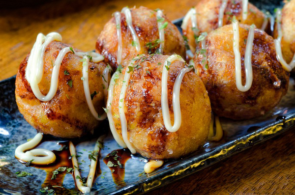

 |
วิธีทำ ทาโกะยากิ1. เตรียมแป้งทาโกะยากิ ตอกไข่ไก่ลงไปในชามผสม ตีให้ไข่แตกดี ตามด้วยน้ำซุป น้ำเปล่า และแป้งสาลีอเนกประสงค์ ตีให้เข้ากัน กรองหนึ่งครั้ง พักไว้ 2. ตั้งเตาสำหรับทอดทาโกะยากิ ทาน้ำมันลงไปเล็กน้อย จากนั้นเทแป้งลงไปในหลุม ตามด้วยกะหล่ำปลี ต้นหอม ขิงดอง และปลาหมึก 3. ใช้ไม้เสียบลูกชิ้น คอยพลิกแป้งทาโกะยากิให้เป็นทรงกลม รอจนสุกทั่วกัน ตักขึ้นมาพักไว้ 4. ราดด้วยซอสทาโกะยากิ และมายองเนสญี่ปุ่น สาหร่ายและปลาอบแห้งตามชอบ เป็นอันเสร็จ
|